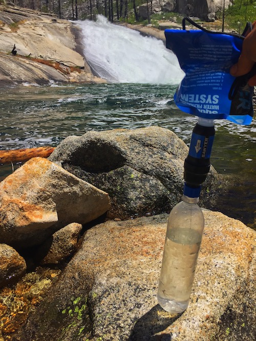
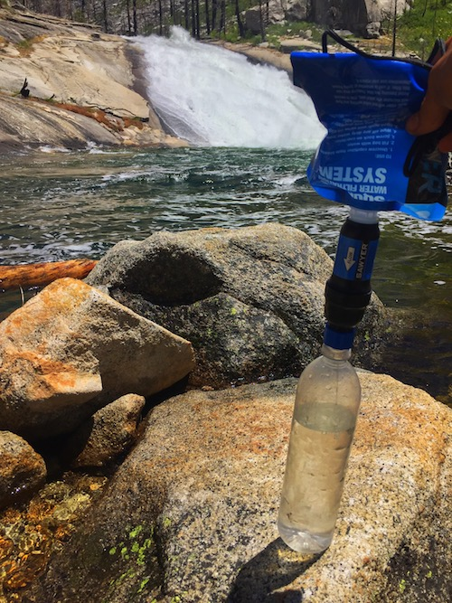

Backpacking in the Technological Era
Maximize the enjoyment, convenience, and safety of your hike with these free technologies.
In this forever evolving market for outdoor applications, I summarize and guide you through the most relevant software from my experiences out on trail. For each application recommended, from gear lists to smartphone GPS navigation, I provide an introduction and a fundamental guide to get started with screenshots and examples. I made sure that all the technologies are free, promoting the principle that just like technology, the outdoors should be accessible by all.
This eBook is broken down into three major parts. The first part presents technologies to facilitate the preparation for a trip, including resources used to organize gear which can also help in terms of mental preparation and streamlining your pack weight. It also contains navigation tools used to devise a route and calculate statistics, such as distance and elevation. The second section includes applications that are used while out on the trail. These include mobile maps with GPS tracking that do not need an internet connection to operate and the highly informative but optional applications used to educate yourself about the outdoors and wildlife. Finally, I cover advanced settings to minimize battery drain since I notice a lot of hikers pack unnecessarily bulky power banks to supply minimal phone use. A dead phone is a safety hazard since you might end up needing to make an emergency call or SMS.
Free PDF Download!
Free on Google Books!
I created my website mainly to document my backpacking trips. As an ultralight backpacker, I spend countless hours scouring through the subreddit and Backpacking Light, researching gear options and cool trails around me. If you take a look at my gear (linked above), it is clear that I take many sacrifices in comfort to streamline my pack weight. For instance,
I do not bring a stove, but rather, I cold soak, allowing cold water to rehydrate my oats, couscous, and other calorie dense foods. Also, I ditched my tent for a flat tarp, so I can utilize my trekking poles and lose a pound. So far, I have section hiked part of the JMT (with my boi Alden and Jeremy) and most of the more minor backpacking trails around me.
As a Boy Scout, I take full advantage of our many outings to test out new gear, like my new tarp! My dream is to hike the PCT after graduation. After becoming intrigued by cybersecurity systems, I began to record some of my projects on my website in my avid exploration of this field. I started by investigating applied cryptography, using current
algorithms for specifc purposes, like my Secret Sharing Architecture for Attorney-Client Data. Recently, I am inreasingly fascinated about forensics and malware detection under the guidance of a eminent researcher in the field. All my projects are recorded on my Github.


 
